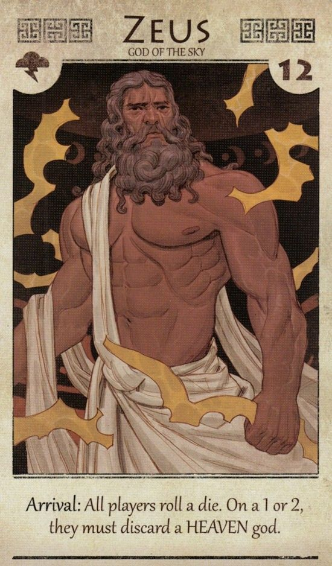
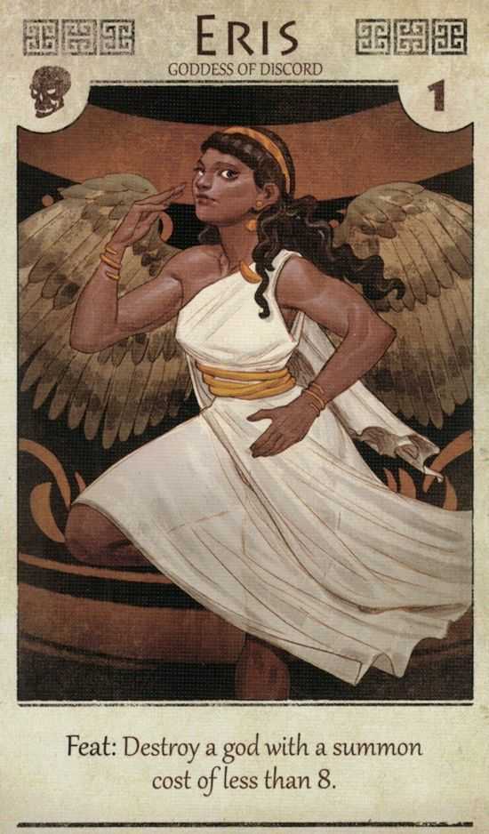
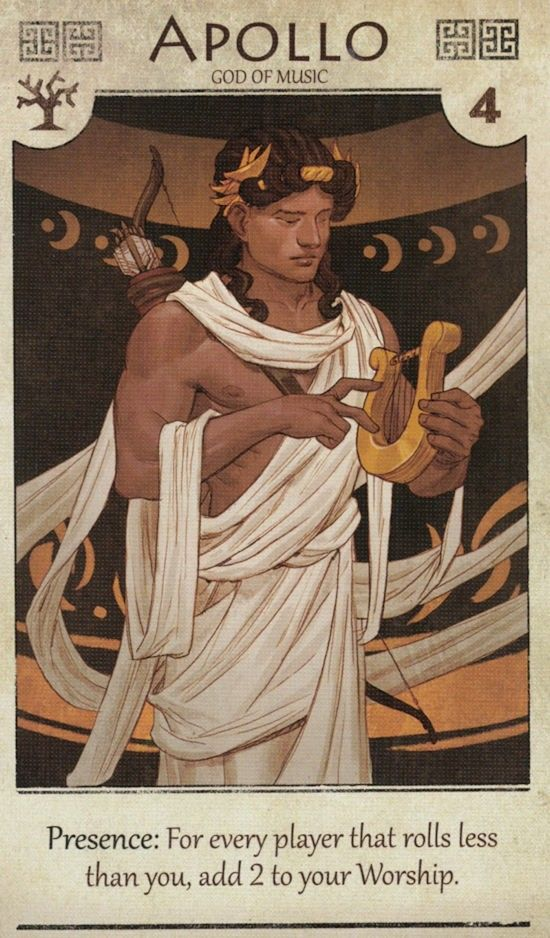
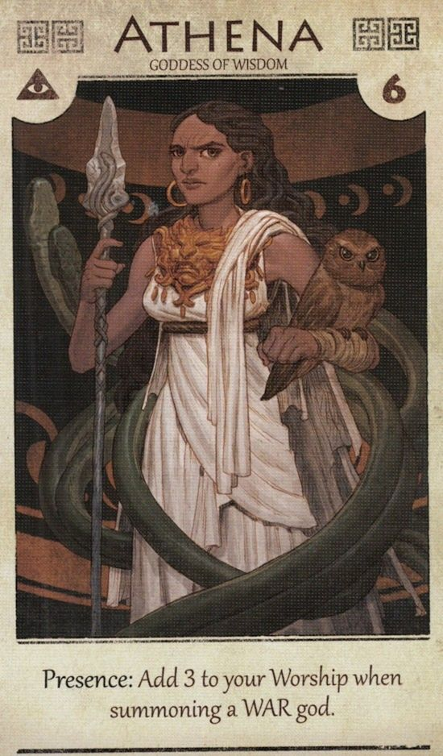
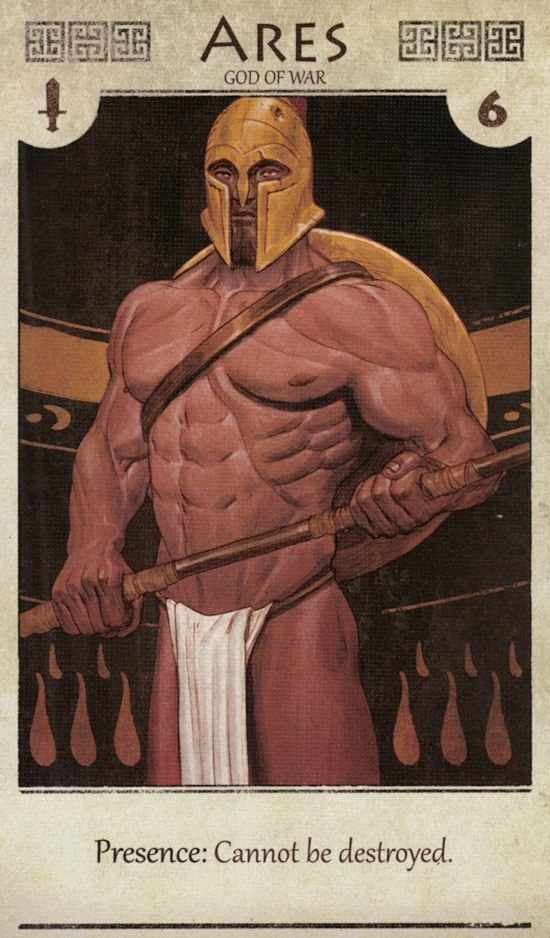
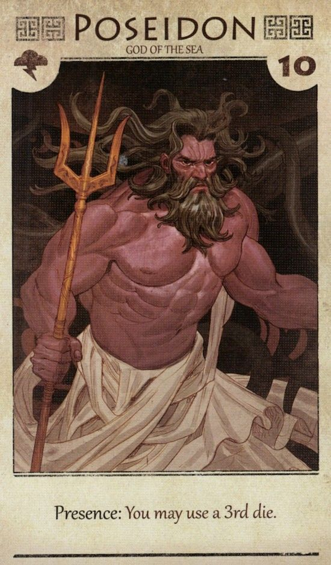
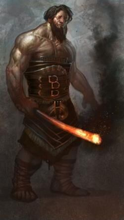
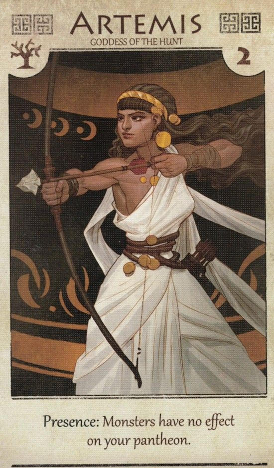
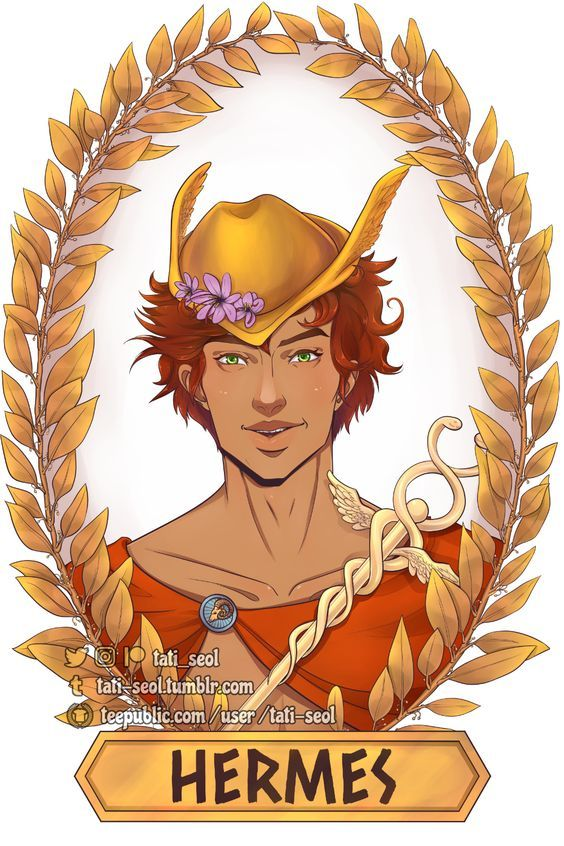
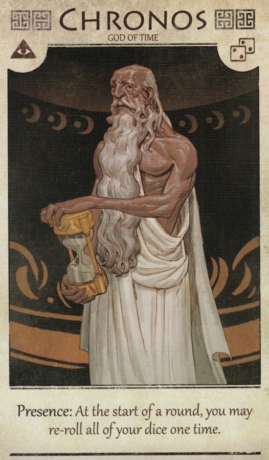

Existem diversos deuses e deusas na mitologia grega, no entanto, os mais poderosos eram aqueles que supostamente habitavam a região do monte Olimpo e, por esse motivo, eram conhecidos como os Deuses Olímpicos. São 12 os deuses olímpicos:
Zeus: deus dos deuses e governante do monte Olimpo (morada dos deuses superiores). Também é considerado o deus da chuva, do céu e das tempestades.
Hera: deusa do matrimônio, do parto e da família. É a companheira de Zeus e rainha do Olimpo.
Afrodite: deusa do amor, da beleza e do sexo. Considerada a deusa mais bela de todas.

Apolo: deus do sol e da luz, mas também era contemplado como deus da música e poesia. Conhecido por dirigir uma carruagem que transporta o sol.
Atena: deusa da sabedoria. Filha de Zeus e Métia (sua primeira companheira).
Ares: deus da guerra. Filho de Zeus e Hera.
Poseidon: deus dos oceanos e mares. Irmão mais velho de Zeus e Hades.
Hefesto: deus do fogo e da forja. Considerado o “arquiteto do Olimpo” e o responsável pelas erupções vulcânicas. É filho de Zeus e Hera, mas foi abandonado pela mãe por nascer muito fraco e feio.
Ártemis: deusa da caça, da vida selvagem e das noites de lua. Também é considerada a deusa protetora dos animais.
Héstia: deusa do fogo. Filha de Reia e Cronos.

Hermes: mensageiro dos deuses, protetor dos viajantes e comerciantes. É filho de Zeus com Maia, filha de Atlas.
Deméter: deusa das plantas, das estações do ano e da terra cultivada. É filha de Cronos e Réia.
